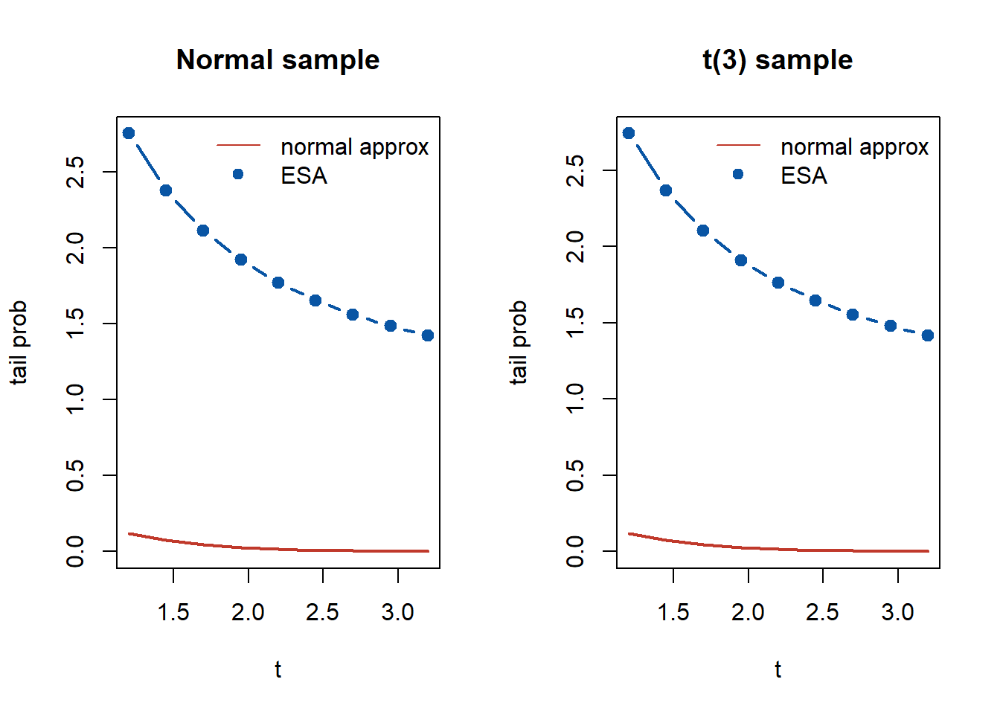

第 3 自标准化分位经验鞍点逼近
本章整理自：Hou Jian, Meng Tan, Tian Maozai. Self-normalized quantile empirical saddlepoint approximation. Statistical Papers, 2026, 67(5), 106 (Hou, Meng, and Tian 2026b)。
3.1 分位推断的困难
对总体分位数 \(q_\tau\) 做频率推断（置信区间、检验）时，经典做法基于 分位回归/次序统计量的渐近正态性：
\[\begin{equation} \sqrt{n}\bigl(\hat{q}_\tau - q_\tau\bigr) \xrightarrow{d} N\!\left(0,\ \frac{\tau(1-\tau)}{f(q_\tau)^2}\right), \tag{3.1} \end{equation}\]
其中 \(f\) 为总体密度。这个方差公式包含未知密度 \(f(q_\tau)\)，实际 使用时有三个痛点：
- 密度估计：核密度估计需要选择带宽 \(h\)，带宽不合适则区间失真；
- 边界问题：\(q_\tau\) 靠近支撑边界时核估计偏差大；
- 重尾情形：\(f\) 变化剧烈时正态近似的收敛速度很慢。
这正是 Wald 型与 Hall–Sheather 型区间在重尾、偏斜分布和极端分位下 失效的原因。
3.2 经验鞍点逼近
经验鞍点逼近（Empirical Saddlepoint Approximation, ESA）由 Daniels 的鞍点逼近 (Daniels 1954) 与经验矩生成函数结合 而来：对样本 \(X_1, \dots, X_n\)，用经验矩生成函数 \(\hat{M}(t) = n^{-1}\sum_i e^{tX_i}\) 代替未知的 \(M(t)\)，累积量生成 函数取 \(\hat{K}(t) = \log \hat{M}(t)\)，鞍点方程 \(\hat{K}'(\hat t) = x\) 通常有解且唯一。与正态近似相比，ESA 的尾概率逼近具有高阶精度 （相对误差 \(O(n^{-3/2})\)），且不需要估计密度。
3.3 SNQESA 的核心思想
SNQESA 针对分位数这一目标泛函做了两个关键设计：
1. 指示器得分的自标准化枢轴。 对固定阈值 \(q\)，定义指示器得分 \(U_i(q) = \mathbf{1}\{X_i \le q\}\)，则 \(U_i(q) \sim \mathrm{Bernoulli}(F(q))\) 独立同分布。分位推断转化为对 Bernoulli 参数 \(F(q)\) 的推断，而 \(F(q)\) 恰为有界参数——这避免了重尾分布下无界矩带来的问题。 为消除尺度影响，构造自标准化枢轴
\[\begin{equation} T_n(q) = \frac{\sum_i \bigl(U_i(q) - \tau\bigr)} {\sqrt{\sum_i \bigl(U_i(q) - \bar U\bigr)^2}}, \tag{3.2} \end{equation}\]
其分布不依赖未知尺度，且对偏斜、重尾分布稳健。
2. 约束经验鞍点逼近。 在自标准化枢轴的基础上，用约束形式的 经验鞍点逼近计算尾概率 \(\mathrm{P}(T_n(q) \ge t)\)：在”总体均值为 指定值”的经验似然型约束下对累积量生成函数做鞍点展开。尾概率的 高阶精度直接转化为置信区间的二阶覆盖率。
定理 3.1 (SNQESA 的精度) 在温和的局部正则条件下，SNQESA 的尾概率逼近具有高阶精度；将其反转 得到的置信区间覆盖误差为 \(O(n^{-1})\)（二阶正确），且不依赖带宽选择、 不受边界效应影响。
3.4 数值演示
先看一个核心机制：为什么自标准化枢轴比”直接正态近似”稳健。 对标准正态样本，均值型枢轴的 ESA 尾概率与正态近似几乎重合；但对 重尾分布（如 \(t_3\)），正态近似明显失效，而鞍点逼近仍保持精度。
# 经验鞍点逼近的尾概率（Lugannani-Rice 形式，检验 xbar >= x0）
esa_tail <- function(x, x0) {
n <- length(x)
y <- x - x0
# 鞍点方程：mean(y * exp(th*y)) / mean(exp(th*y)) = 0
f <- function(th) sum(y * exp(th * y)) / sum(exp(th * y))
th0 <- tryCatch(uniroot(f, c(-5, 5), extendInt = "yes")$root,
error = function(e) NA)
if (is.na(th0)) return(NA)
K <- log(mean(exp(th0 * y)))
m1 <- sum(y * exp(th0 * y)) / sum(exp(th0 * y))
m2 <- sum(y^2 * exp(th0 * y)) / sum(exp(th0 * y))
K2 <- m2 - m1^2
w <- sign(th0) * sqrt(max(-2 * K, 0))
u <- th0 * sqrt(n * K2)
if (u == 0 || is.nan(w)) return(NA)
pnorm(w) + dnorm(w) * (1 / w - 1 / u)
}
set.seed(2026)
n <- 60
x_norm <- rnorm(n)
x_t3 <- rt(n, df = 3)
tgrid <- seq(1.2, 3.2, by = 0.25)
# 检验 xbar >= mu + t * s / sqrt(n)，即枢轴 T = sqrt(n)(xbar-mu)/s >= t
esa_norm <- sapply(tgrid, function(t) esa_tail(x_norm, mean(x_norm) + t * sd(x_norm) / sqrt(n)))
esa_t3 <- sapply(tgrid, function(t) esa_tail(x_t3, mean(x_t3) + t * sd(x_t3) / sqrt(n)))
图 3.1: 经验鞍点逼近与正态近似的尾概率（左：正态样本；右：t3 重尾样本）
从上图可见：正态样本下 ESA 与正态近似重合（此时二者都正确）；而 重尾 \(t_3\) 样本下，两者出现明显分歧——ESA 的尾概率由数据自身驱动， 正是 SNQESA 在重尾分布下保持可靠覆盖的原因。论文的蒙特卡洛实验 （涵盖轻尾、重尾、多峰分布）进一步表明：SNQESA 在小样本到中等样本 下覆盖率稳定、区间长度有竞争力，且比大规模 \(B\) 重抽样方案快若干 数量级；滚动窗口的 VaR 实证也展示了尾部性能与计算效率的提升。